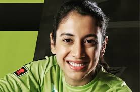

ABOUT
Smriti Shriniwas Mandhana
( born 18 July 1996) is an Indian cricketer who plays for the Indian
women's national team. In June 2018, the Board of Control for
Cricket in India (BCCI) named her as the Best Women's International
Cricketer. In December 2018, the International Cricket Council (ICC)
awarded her with the Rachael Heyhoe-Flint Award for the best female
cricketer of the year.On 30 December 2021, she became a nominee
of the ICC Women's T20 Player of the Year. In December 2021,
she, Tammy Beaumont, Lizelle Lee and Gaby Lewis was nominated for the
ICC Women's Cricketer of the Year. In January 2022, the ICC awarded
her with the Rachael Heyhoe-Flint Award for the ICC Women's Cricketer of
the Year.

Early and personal life
Mandhana was born on 18 July 1996 in Mumbai to Smita and Shrinivas
Mandhana in a Marwari family.When she was two, the family
moved to Madhavnagar, Sangli in Maharashtra, where she
completed her schooling. Both her father and brother,
Shravan, played cricket at the district-level, for
Sangli. She was inspired to take up cricket after
watching her brother play at the Maharashtra state
Under-16s tournaments. At the age of nine, she was selected
in the Maharashtra's Under-15 team. At eleven, she was picked
for the Maharashtra Under-19s team.Mandhana's family is closely
involved in her cricketing activities. Her father Shrinivas, a
chemical distributor, takes care of her cricket programme, her
mother Smita is in charge of her diet, clothing and other organisational
aspects, and her brother Shravan still bowls to her in the nets.
Domestic career
Her first breakthrough came in October 2013, when she became the first Indian
woman to achieve a double-hundred in a one-day game. Playing for Maharashtra
against Gujarat, she scored an unbeaten 224 off 150 balls in the West Zone
Under-19 Tournament, at the Alembic Cricket Ground in Vadodara.
In the 2016 Women's Challenger Trophy, Mandhana scored three half-centuries
for India Red in as many games, and helped her team win the trophy by making an unbeaten
62 off 82 balls in the final against India Blue. With 192 runs, she emerged as the
tournament's top-score.In September 2016, Mandhana was signed up for a
one-year deal with Brisbane Heat for the Women's Big Bash League (WBBL),
and along with Harmanpreet Kaur, became one of the first two Indians to
be signed up for the League.
Playing against Melbourne Renegades in January
2017, she fell awkwardly while fielding after bowling the final ball of
her over hurting her knee. She was ruled out of the rest of the
tournament which she ended having scored 89 runs in 12 innings.
In June 2018, Mandhana signed for Kia Super League defending champions
Western Storm, becoming the first Indian to play in the league. In
November 2018, she was named in the Hobart Hurricanes' squad for the 2018–19
Women's Big Bash League season. In 2021, she was drafted by Southern Brave for the inaugural season of The Hundred.[22] She played for them in 7 games and scored 167 runs before leaving them for India's tour of Austrlia
In September 2021, she was named in the Sydney Thunder's squad for the 2021-22
Women's Big Bash League season. She scored a hundred in the season,
equalling the record for the tournament's highest ever score.In February
2022, she was retained by Southern Brave for the 2022 edition of the Hundred.